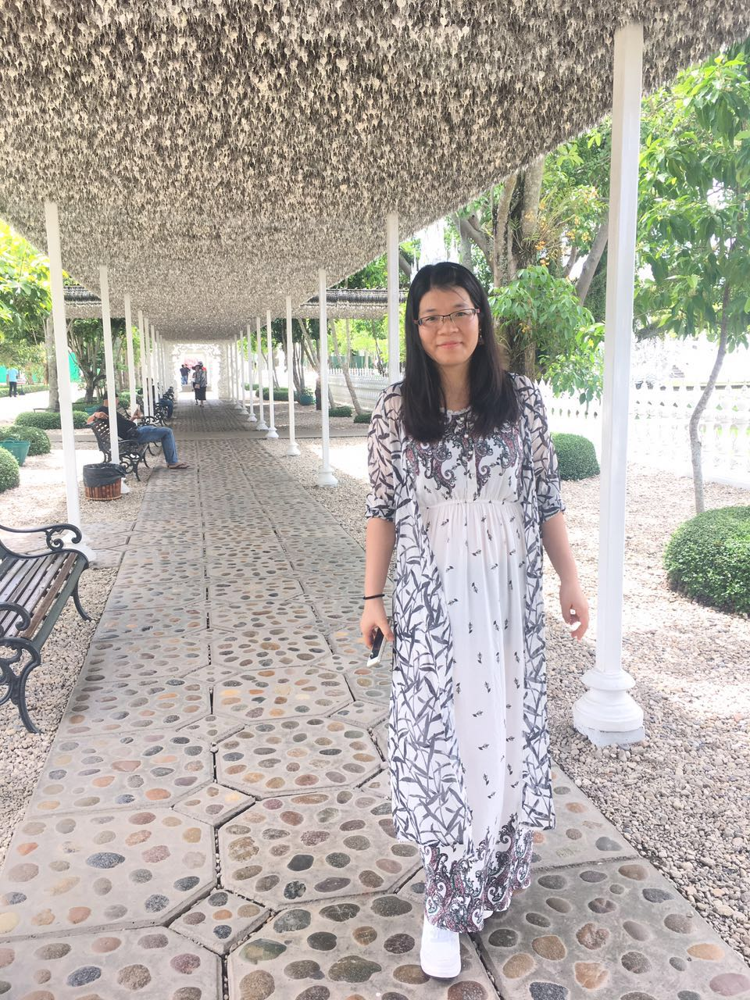

News
27 Aug. 2016
Arrived Singapore to have a two years visiting study in School of Computing of National University of Singapre(NUS).
31 May 2016
Got the two-years scholar for visiting NUS.
3 Feb. 2016
Successfully got an visiting offer from Prof. KAN Min-Yen to have a two years visiting study in School of Computing of National University of Singapre(NUS).
1 Sep. 2015
Became a Ph.D student in UESTC.
1 Sep. 2013
Became a Master student in UESTC.
1 Oct. 2012
Recommendation examination graduate.
|  |
Yahui AN
Ph.D Student
Web Sciences Centre
Qingshuihe Campus:No.2006, Xiyuan Ave, West Hi-Tech Zone, 611731 | Chengdu, Sichuan, P.R.China
Email: anyahui.120 at gmail dot com
|
I am a visiting student with Prof. KAN Min-Yen since August 2016. Meanwhile, I'm doing my PhD with Prof. Fu Yan and Prof. Dong Qiang. Before that, I obtained my bachelor degree also in UESTC. Here is my CV.
My research interests focus on the applications of network science and recommender systems. I mainly study the user behaviors in e-commerce platforms, social media platforms and news and information platforms. In NUS, I also work on a project on MOOC platforms and a project on group recommendation. The former is trying to develop a digital library system to help MOOC learners to study more efficiently(Collaborator: Muthu Kumar Chandrasekaran). Group recommendation is working on recommend candidates to a group of people rather than an individual(Collaborator: Dr. He Xiangnan).
My research interests focus on the applications of network science and recommender systems. I mainly study the user behaviors in e-commerce platforms, social media platforms and news and information platforms. In NUS, I also work on a project on MOOC platforms and a project on group recommendation. The former is trying to develop a digital library system to help MOOC learners to study more efficiently(Collaborator: Muthu Kumar Chandrasekaran). Group recommendation is working on recommend candidates to a group of people rather than an individual(Collaborator: Dr. He Xiangnan).
Publications
 |
Diffusion-like recommendation with enhanced similarity of objects
Ya-Hui AN, Qiang Dong*, Chong-Jing Sun, Da-Cheng Nie, & Yan Fu Physica A: Statistical Mechanics and its Applications(2016) 461, 708-715 |
|
Information filtering via balanced diffusion on bipartite networks
Da-Cheng NIE , Yahui AN, Qiang Dong, Yan Fu & Tao Zhou Physica A: statistical mechanics and its applications(2015) 421, 44-53 |
|
The hamiltonicity of generalized honeycomb torus networks
Qiang Dong, Qian Zhao, Ya-Hui AN Information Processing Letters(2015) 115 (2), 104-111 |
Internships
| WING-NUS Research Intern, WING Group, supervised by Min-Yen KAN. WING, 13 Computing Drive, AS6 #05-12 Singapore 117417 Aug. 2016 - Aug. 2018 |
| Baifengdian Group Software Engineering Intern, supervised by Tao Zhou Beijing, China Jul. 2014 - Aug. 2014 |
Projects
| MOOC Wikification |
| Coursera Scraper |
| Real-time information recommender system |
| Hadoop Platform of Recommender System |
Useful Links
| TensorFlow Study |
| NUS SoC Journal Ranking |
| NUS SoC Courses |
| Machine Learning Reading List |
| Deep Learning Reading List |
Last update: July 3, 2017. Webpage template borrows from Weinan Zhang.